<img class="big" src="morphology/raytheon.jpg"> --- # Syntax 3: Syntax is a Life Sentence ### Matt Zaslansky - LIGN 101 --- ### Today's Plan - A bit more tree growth - All that we're leaving behind --- ### You may think... <img class="r-stretch" src="diagrams/tree_phrasestructurerules.jpg"> --- ### ... but in reality ... <img class="r-stretch" src="diagrams/tree_phrasestructurerules_alt.jpg"> --- ## Drawing Trees --- ### How do you draw phrase structure trees? - **Only Electronically!** - This makes for fewer scanning and legibility issues - Pros tend to use LaTeX, but that's fancy - Or using a tool like <http://ironcreek.net/phpsyntaxtree/> - You'll need to use bracket notation for that - It's frustrating at first, but it does the job - This is a friendly tool <https://groverburger.github.io/sapling/> --- ```[.S [.NP [.NP [.DET The ] [.N' [.ADJ proud ] [.N' [.N baker ] ] ] ] [.PP [.P from ] [.NP [.N' [.N San Bernadino ] ] ] ] ] [.VP [.V loved ] [.CP [.C that ] [.S [.NP [.N' [.N people ] ] ] [.VP [.V cheered ] [.CP [.C as ] [.S [.NP [.N' [.N Will ] ] ] [.VP [.VP [.V ate ] [.NP [.NP [.DET the ] [.N' [.ADJ massive ] [.N' [.ADJ chocolate ] [.N' [.N cake ] ] ] ] ] [.PP [.P from ][.NP [.DET the ] [.N' [.ADJ new ] [.N' [.N bakery ] ] ] ] ] ] ][.PP [.P with ] [.NP [.DET his ] [.N' [.N wife ] ] ] ] ] ] ] ] ] ] ] ]``` <img class="r-stretch" src="diagrams/tree_complementizercake2.jpg"> --- ### A department-made a video tutorial for creating these trees using [jsSyntaxTree](https://ironcreek.net/syntaxtree/), courtesy of Professor Styler <https://www.youtube.com/watch?v=yzr-MAMTK5k> --- ### Let's Practice ([if we have time](http://savethevowels.org/talks/l101_12_syntax2.html#/106)) "The grumpy polar bears from LA hated the excruciating traffic on the 405." --- ### "The grumpy polar bears from LA hated the excruciating traffic on the 405." Let's break it down! --- ### The grumpy polar bears * Rule 1 -> Rule 4 -> Rule 4 -> Rule 3 --- <img class="r-stretch" src="diagrams/tree_polarbears1.jpg"> --- ### From LA * Rule 6 -> Rule 2 -> Rule 3 --- 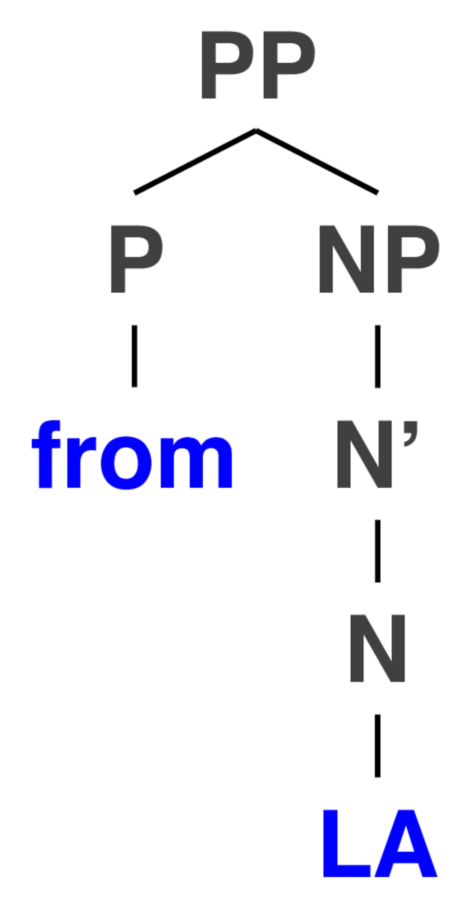 --- ### The grumpy polar bears from LA * Combine the PP and NP using Rule 5 --- 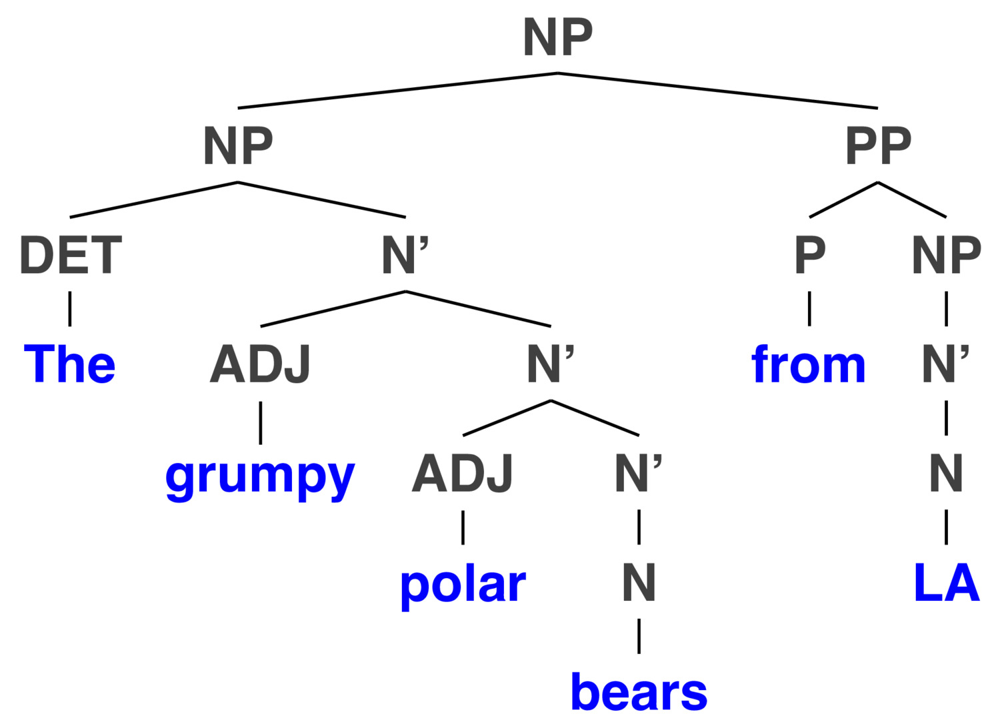 --- ### The excruciating traffic * Rules 1, 4, 3 --- <img class="r-stretch" src="diagrams/tree_polarbears4.jpg"> --- ### On the 405 * Rule 6 -> Rule 1 -> Rule 3 --- <img class="r-stretch" src="diagrams/tree_polarbears5.jpg"> --- ### The excruciating traffic on the 405 * Rule 5 to combine the two chunks --- <img class="r-stretch" src="diagrams/tree_polarbears6.jpg"> --- ### hated the excruciating traffic on the 405 * A little bit of Rule 9's all I need --- 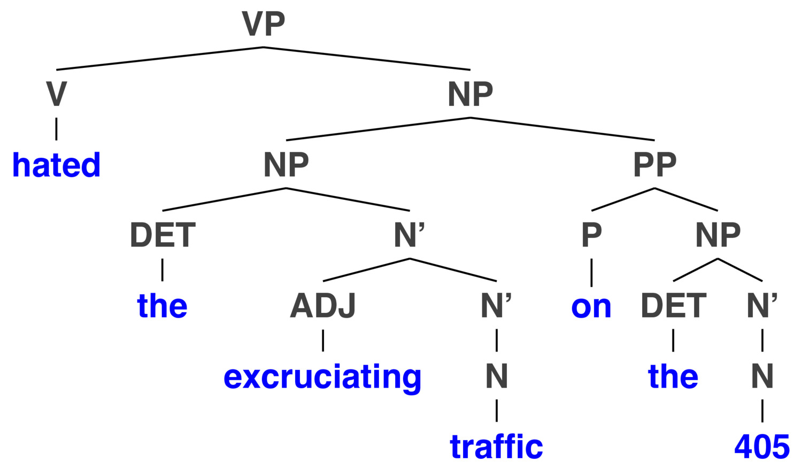 --- ### "The grumpy polar bears from LA hated the excruciating traffic on the 405." - Rule 7, then BOOM! --- 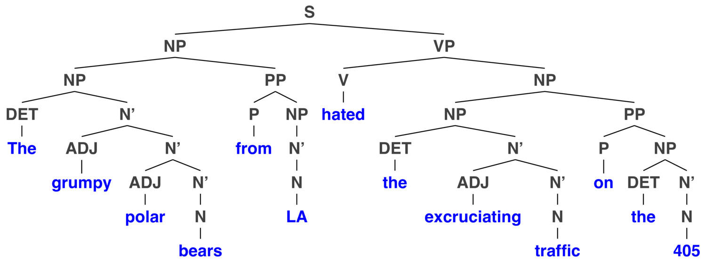 --- ### Syntactic Ambiguity is Everywhere! 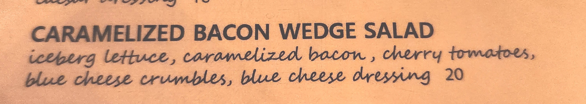 --- ### Grab some scratch paper - That's right, we're killing trees to make trees! --- ### What previous 101 submissions looked like <https://padlet.com/wstyler/ebl0u0v2ukq3> <img class="r-stretch" src="https://assets.padletcdn.com/padlets/ebl0u0v2ukq3/qr_code.png"> --- ### OK, let's start off with something easy! --- ### Jessica dislikes that her silly husband cooked a big squishy tofurkey for their romantic dinner --- - Let's take it piece by piece :) - Work through each chunk - Click in with 'B' when you start a chunk, and 'A' when you finish, and 'E' if you're lost --- ### Jessica <https://padlet.com/wstyler/ebl0u0v2ukq3> <img class="r-stretch" src="https://assets.padletcdn.com/padlets/ebl0u0v2ukq3/qr_code.png"> --- <img class="r-stretch" src="diagrams/tree_jessicatofu_jessica.jpg"> --- ### Her silly husband <https://padlet.com/wstyler/ebl0u0v2ukq3> <img class="r-stretch" src="https://assets.padletcdn.com/padlets/ebl0u0v2ukq3/qr_code.png"> --- 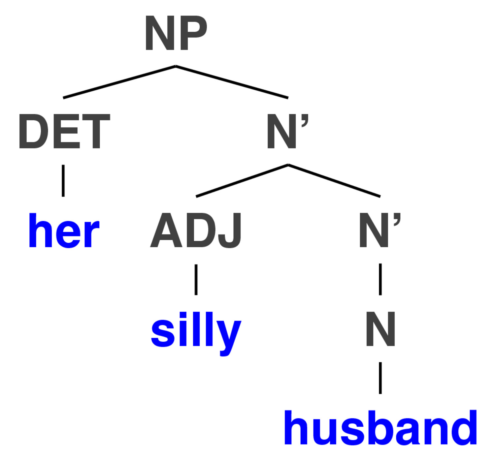 --- ### A big, squishy tofurkey <https://padlet.com/wstyler/ebl0u0v2ukq3> <img class="r-stretch" src="https://assets.padletcdn.com/padlets/ebl0u0v2ukq3/qr_code.png"> --- 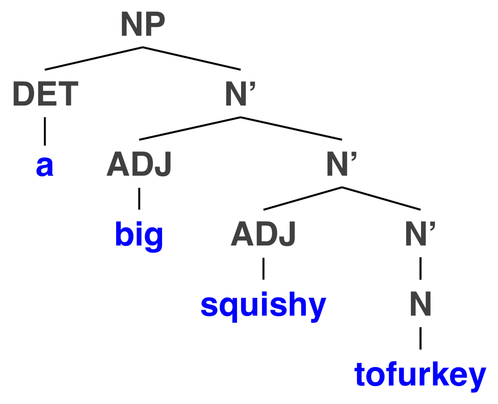 --- ### For their romantic dinner <https://padlet.com/wstyler/ebl0u0v2ukq3> <img class="r-stretch" src="https://assets.padletcdn.com/padlets/ebl0u0v2ukq3/qr_code.png"> --- <img class="r-stretch" src="diagrams/tree_jessicatofu_pp.jpg"> --- ### Cooked a big squishy tofurkey for their romantic dinner <https://padlet.com/wstyler/ebl0u0v2ukq3> <img class="r-stretch" src="https://assets.padletcdn.com/padlets/ebl0u0v2ukq3/qr_code.png"> --- 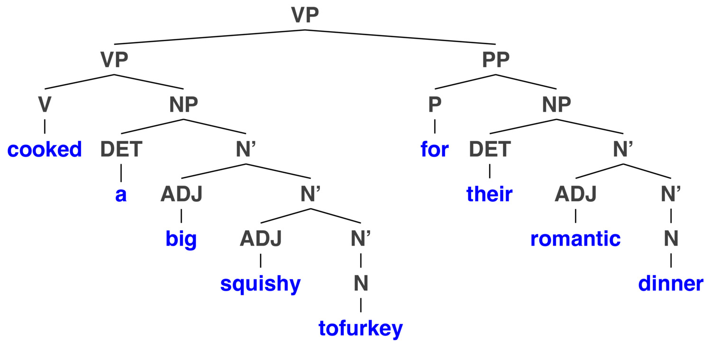 --- ### That her silly husband cooked a big squishy tofurkey for their romantic dinner <https://padlet.com/wstyler/ebl0u0v2ukq3> <img class="r-stretch" src="https://assets.padletcdn.com/padlets/ebl0u0v2ukq3/qr_code.png"> --- <img class="r-stretch" src="diagrams/tree_jessicatofu_comp.jpg"> --- ### Jessica dislikes that her silly husband cooked a big squishy tofurkey for their romantic dinner <https://padlet.com/wstyler/ebl0u0v2ukq3> <img class="r-stretch" src="https://assets.padletcdn.com/padlets/ebl0u0v2ukq3/qr_code.png"> --- 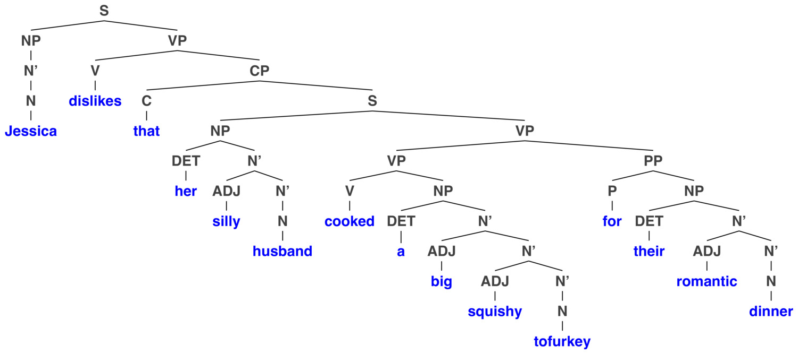 --- Here's another one! --- ### The prescriptivist English Professor glared at the rebellious linguist --- Spoiler alert. --- ### The prescriptivist English Professor glared at the rebellious linguist --- 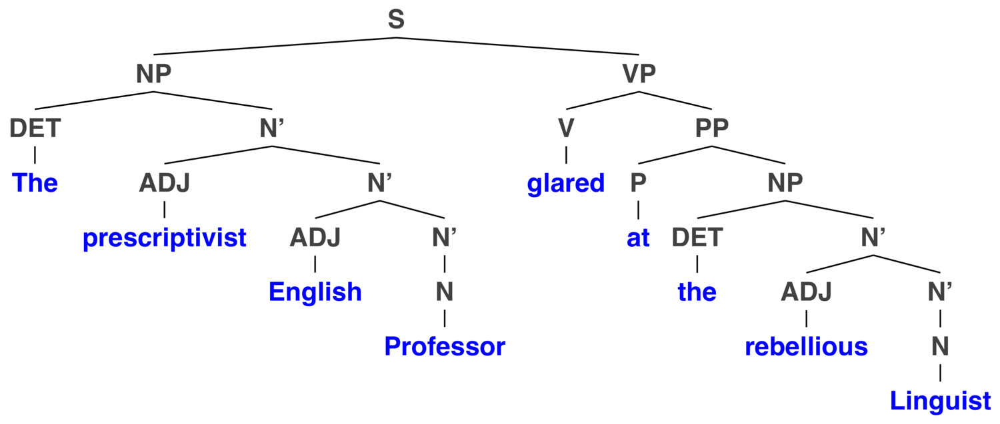 --- ### OK, OK, enough with the trees! - Yeah, I know. --- ### This is the problem with LIGN 101 - There's too much awesomeness to Syntax for me to cover in three classes - We need to focus on what's crucial - (You all understanding syntactic hierarchy) - ... over what's awesome - Cross-linguistic patterns and advanced syntactic questions --- ### ... and a whole lot has been dismissed as "Here there be dragons" --- # Introducing some Dragons <img class="r-stretch" src="humorimg/smaug.jpg"> --- ## English Syntax is *way* more complicated --- ### We're looking at relatively simple sentences - (It may not feel that way, but we are!) --- ### "Truly, my dismay that three dragons were slain by the fame-craving knight couldn't be greater." - Your phrase structure rules will shatter against such pain. --- ### "Robert who came last weekend when you threw that party where Marvin saw Bob is kind of a jerk." - That's right, that's two S's inside an NP --- ### Also, sentences will do weird things - Weird things will be done by sentences. - Weird things will be the things that sentences do. - What will sentences do? - Will sentences do weird things? --- ### Passive Voice - Miguel threw Rajesh the ball. - Rajesh was thrown the ball. - **Passive voice turns the object of a sentence into the subject** --- ### This is a 200 foot pole 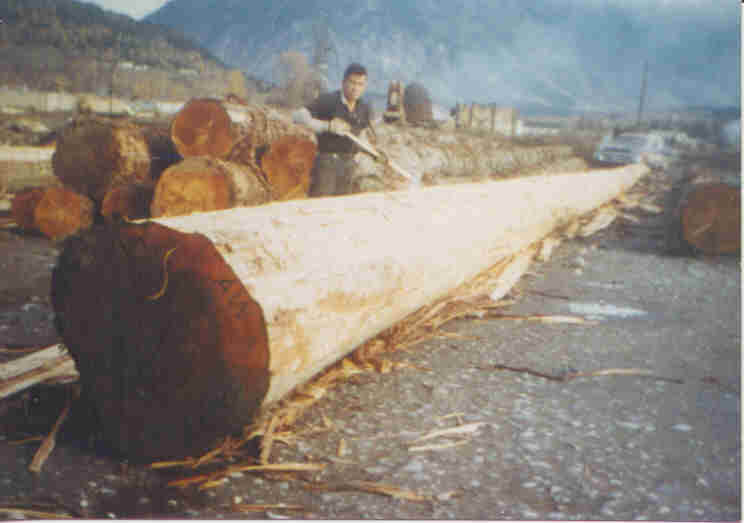 - The passive voice will not be touched with it --- ### This makes us think about 'movement' and 'transformation' - Phrase structure rules don't account for changes --- ### Maria can buy Cheerios - Can Maria buy Cheerios? - It was Maria who bought the Cheerios - Cheerios are what Maria bought - Who can buy Cheerios? - What can Maria buy? - Maria can buy what? --- ### The movement... it's everywhere - Your book gets a bit deeper into this than we have time to - ... but it's cooooooool. --- ## Here's a fun dragon --- ### Garden Path Sentences Sentences which are easy to incorrectly parse at first --- ### Example Garden Paths - The old man the boat. - The complex houses married soldiers and their families. - The girl told the story cried. - The man who whistles tunes pianos. - The war on plastic faces setback as cost of recycled material soars - This is from [the Guardian](https://www.theguardian.com/environment/2019/oct/13/war-on-plastic-waste-faces-setback-as-cost-of-recycled-material-soars), and was fixed with 'plastic waste' after publication --- ### The horse raced past the barn fell --- 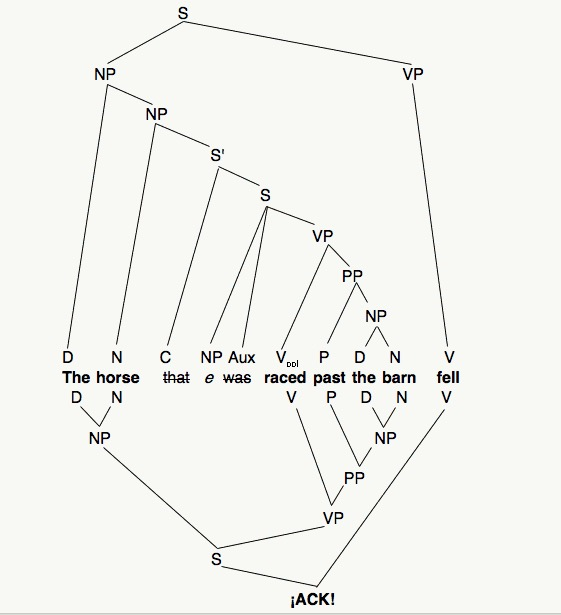 Source: <http://languagelog.ldc.upenn.edu/nll/?p=167> --- ### These occur in human language <img class="r-stretch" src="img/gardenpath_dog.jpg"> --- ## Let's look at some other sentences --- <section class="clicker"></section> ### A is 'Perfectly Grammatical', E is 'Completely Ungrammatical' --- <section class="clicker"></section> ## More three dogs bit than eight humans. --- <section class="clicker"></section> ## More cats are on my bed than I can cuddle them. --- <section class="clicker"></section> ## More sales are expected this year relative to last year. --- <section class="clicker"></section> ## More tourists have been to England than to Kazakhstan. --- <section class="clicker"></section> ## More people have been to Russia than I have. --- <section class="clicker"></section> ## More politicians self-finance their campaigns in the USA than elsewhere. --- <section class="clicker"></section> ## More undergrads text their friends during the week than I text my friends. --- ### Wait a second... - More people have been to Russia than I have. - More undergrads text their friends during the week than I text my friends. - **What do these actually mean?!?** --- ### These are called 'Comparative Illusions' - ... and they show that we can have instincts which make something 'seem' grammatical and sensical which actually isn't! - The factors which make these feel more or less acceptable are a subject of syntactic research - They can even happen in natural speech - 'I think there are more candidates on stage who speak Spanish more fluently than our president speaks English.' - [Dan Rather](https://twitter.com/danrather/status/1144076809182408704?lang=en) --- ### How about some center embedding gore? --- > An apparently new speech disorder a linguistics department our correspondent visited was affected by has appeared. - An apparently new speech disorder - a linguistics department - our correspondent - visited - was affected by - has appeared. --- > The cause experts the LSA sent investigate remains elusive. - The cause - experts - the LSA - sent - investigate - remains elusive. --- > Physicians neurologists psychologists other linguists called for help called for help called for help didn’t help either. - Physicians - neurologists - psychologists - other linguists - called for help - called for help - called for help - didn’t help either. --- > The patient the nurse the doctor consulted was sick. - The patient - the nurse - the doctor - consulted - was sick. - <danger>wtf?!?!</danger> --- ### Thanks to Emily Davis for some of these syntactic troubles - Also here's the center embedding [source](https://specgram.com/CLI.2/03.bakery.disorder.html) --- ### Modifier Scope issues - “Crispy Ahi Tuna Tacos” - Crispy tuna, or Crispy Tacos --- ## There are other approaches to Syntax too! --- ### V', S', IP, and more! - There are many theories and approaches, each with pros and cons - This is the case in anything in Linguistics, but especially here! --- ## Other Languages exist! --- ### Different languages do sentences differently - Not all languages put the Subject (do-er) before the verb, which is followed by the object (which is being affected) ('SVO') - Lakota is SOV, with postpositions - ASL is SVO and OSV, depending on the verb - Spanish adjectives are after the noun - Russian can move the arguments around to help make your point --- <img class="r-stretch" src="img/realtimevoicetovoice.jpg"> --- ### Phrase structure rules are language specific, too! - We'll play with other languages' phrase structure rules in this class! --- ### We're just trying to get you understanding the basics - What syntax is - How sentences are composed hierarchically - ... and how grammar works for sentences --- ### For everything else, LIGN 121 <img class="r-stretch" src="img/plug.jpg"> --- ## One last oddity --- ### Our rules can act weirdly Rule 8: VP -> V Rule 9: VP -> V NP --- ### To sleep * VP -> V: Matt slept * VP -> V NP: Matt slept Maria --- ### To dream * VP -> V: Matt dreamed * VP -> V NP: Matt dreamed Maria --- ### To walk * VP -> V: Matt walked * VP -> V NP: Matt walked Maria --- ### These are called 'Intransitive verbs' Verbs that only take a single argument, the 'subject' --- ### To hug * VP -> V NP: Matt hugged Maria * VP -> V: Matt hugged --- ### To move * VP -> V: Matt moved * VP -> V NP: Matt moved Maria --- ### To see * VP -> V: Matt saw * VP -> V NP: Matt saw Maria --- ### These are called 'Transitive verbs' Verbs that can take two arguments, a subject and an object --- ### To bake * VP -> V: Matt baked * VP -> V NP: Matt baked a cake * VP -> V NP NP: Matt baked Maria a cake * VP -> V NP NP: ?Matt baked a cake Maria --- ### To find * VP -> V: Matt found. * VP -> V NP: Matt found a cake * VP -> V NP NP: Matt found Maria a cake * VP -> V NP NP: ?Matt found a cake Maria * VP -> V NP NP: Matt found a cake some candles --- ### Ditransitive Constructions Verbs that take a Subject and two objects --- ### To see * VP -> V: ?Matt saw * VP -> V NP: Matt saw a cake * VP -> V NP NP: ?Matt saw Maria a cake * VP -> V NP NP: *Matt saw a cake Maria --- ## Whoa!! - That was a phrase structure rule with three branches! - That happens sometimes, although there are usually other ways! --- ### To make * VP -> V: Matt made * VP -> V NP: Matt made a judge * VP -> V NP NP: Matt made Maria a judge * VP -> V NP NP: Matt made a judge Maria --- ### To make, continued * VP -> V NP: Matt made a judge (with his modelling clay) * VP -> V NP NP: Matt made Maria a robot * VP -> V NP NP: Matt made a robot, Maria --- ### Are you vibing me? - "I'm vibing." - "I'm vibing you." - "I'm vibing with this new album" - "I'm vibing this new album" - "I'm vibing her a new album" --- ### Wait a second... - Our phrase structure rules don't universally apply - A valid phrase structure rule for one verb might not work for another - ... and it seems to be *lexically specific* - It depends on the particular word - ## Is there no hope?! --- 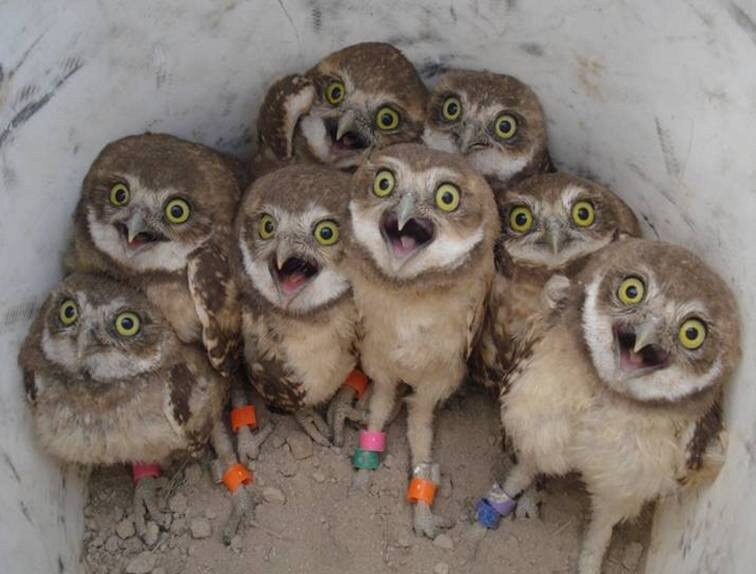 <audio data-autoplay src="humorimg/dramatic.wav"></audio> --- ### (Nah, it's cool, we've got semantics) - See you next time! --- <huge>Thank you!</huge>